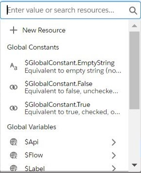
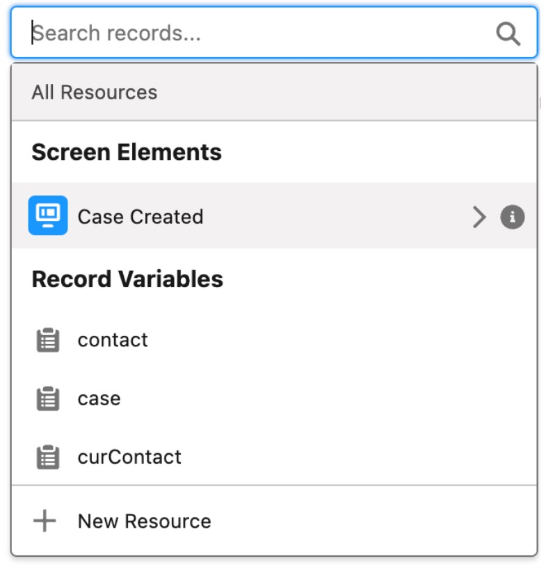
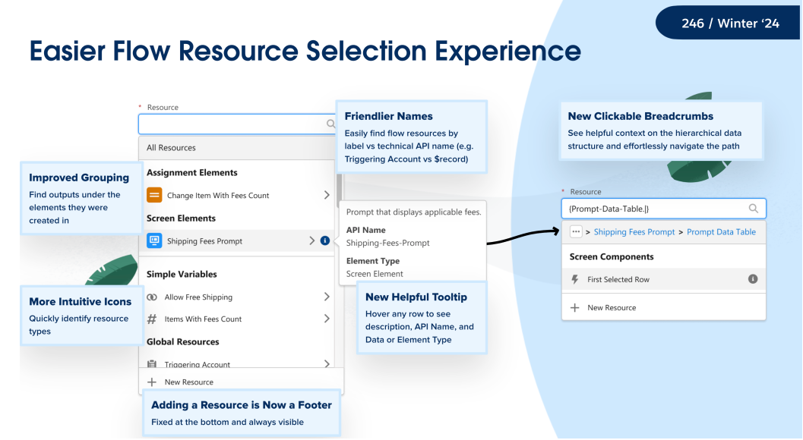
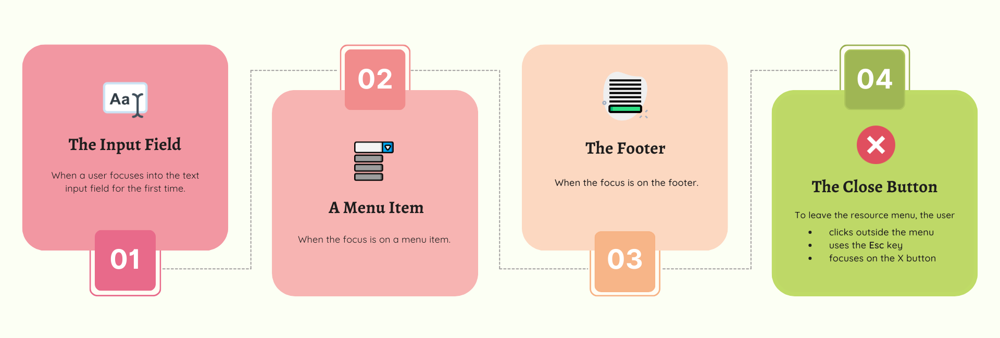
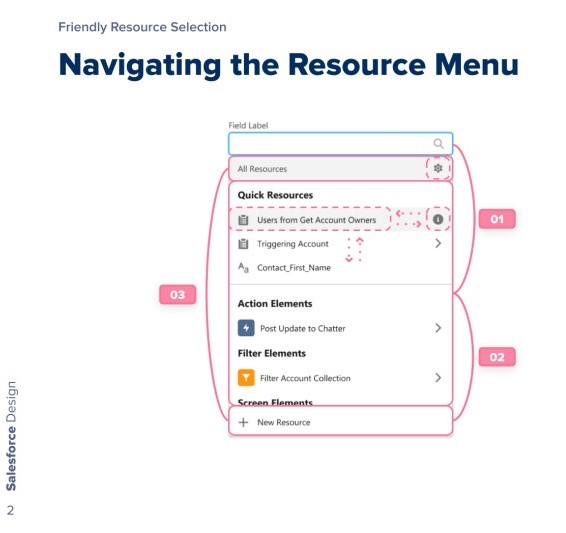
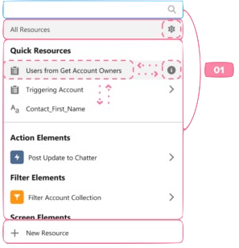
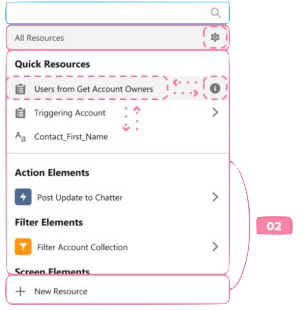
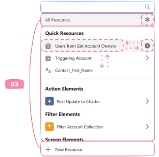
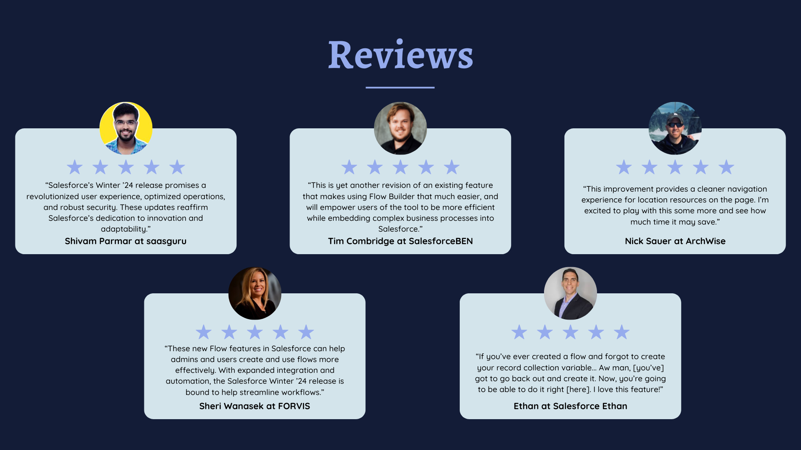

Due to a Non-Disclosure Agreement, information on this project is limited.
Flow Builder is the most powerful automation tool that any Salesforce user has at their disposal (see Case Study #1). It can be used to perform various tasks from sending an email and posting a message to performing mass updates across multiple unrelated records and performing complex logic. I joined this team in April 2022 and have since been working on releasing changes that aim to consistently improve user productivity and experience.
Flow Builder's Resource Menu displays the resources that are available in the flow. Within a broader initiative aimed at an improved resource selection experience, this specific project sought to guarantee keyboard accessibility for the redesigned menu.
The modifications were implemented in Java, Typescript, HTML, and CSS.
The original Resource Menu (v1) needed a design overhaul.
The following are the core problems this product aims to solve:
This is where the revamped Resource Menu (v2) came in. This new design, provided by the UX team, was intended to prioritize customer needs, and improve usability and user productivity.
Initially, when I was tasked with integrating keyboard navigation for the resource menu, it was clear that the aim was to preserve the keyboard navigation experience akin to v1 for consistency. Yet, the interface of v1 differed from that of v2.
v1 didn't showcase a header or footer, nor did it have a distinct nested menu structure like v2. To ensure keyboard navigation was not only compliant with accessibility standards but also tailored to typical Flow Builder user interactions, every nuanced aspect of keyboard navigation had to be collaboratively addressed by the UX team, Product Managers, and Engineers.

v1 Design

v2 Design
WHEN WAS THIS?
Aug - Sep 2022 (1 month)
WHAT'D I DO?
As the team's Accessibility Champion, I devoted much of my efforts to enhancing accessibility standards across all products under our purview and identifying any that were lacking.
My responsibilities include:

When I was first assigned the task to implement comprehensive keyboard navigation for the redesigned resource menu, I began researching web accessibility guidelines for menus. Specifically, I was recommended to refer to World Wide Web Consortium (W3C) for standards and guidelines I could use to apply to our redesigned resource menu.
Subsequently, I began documenting my findings and categorizing them into four common scenarios where the focus would land after certain keyboard navigation.

With the help of the UX team, I documented and presented my findings using this diagram.

The pink numbered lines represent the tabbing order and the pink dotted arrows represent up/down/left/right arrow key interactions.
Let's see how I used this diagram to detail the four common focus scenarios.
When the user focuses into the text input field for the first time:

When the focus is on a menu item:

When the focus is on the footer:

To leave the resource menu, the user can click outside the menu, use the Esc key or click the X button. When this happens:
In the v2 design that now included a header and footer, determining the new tabbing order was most essential.
There were conflicting views on whether tabbing from the input field should move the focus to the menu item (as it does in v1) or to the ‘New Resource‘ option. The former prioritized user familiarity while the latter prioritized adhering to 2.1 global keyboard accessibility standards.
Flow Builder is a point-and-click automation tool. That meant that individuals with low vision (who may have trouble finding or tracking a pointer indicator on screen) and those who have difficulty with using the mouse face challenges in using our product if keyboard alternatives are lacking.
Hence, the team agreed on the importance of upholding 2.1 global keyboard accessibility and pursued the ‘New Resource‘ option.
To tackle the concern of user unfamiliarity, we decided to also incorporate help popups to assist users in grasping the updated keyboard navigation.
Attempting to release a product with inaccessible features simply made no sense. A product that boasts enhanced user experience should ensure that what’s user-friendly for one user is equally accessible and intuitive to another.
After nearly a year of dedicated effort by my team, the revamped selection experience not only met but exceeded our customer's expectations. We introduced a redesigned resource menu that significantly improved user experience and underscored the importance of accessibility. Besides boasting keyboard compatibility, the menu had more intuitive icons, helpful tooltips for each item accessible by keyboard shortcuts, and clickable breadcrumbs for streamlined navigation.
While the updates to keyboard navigation weren't explicitly highlighted, numerous independent and mainstream articles sang praises for the newly-designed selection experience.

Witnessing people genuinely enjoying and appreciating the revamped interface and selection experience emphasized the significance of user-centric feature development.
This project not only deepened my understanding of human-centered design in keyboard interaction but also taught me that a product's user experience can evolve - provided that ample support and direction is offered to its users.
If you're interested, check out this other case study I did on redesigning Salesforce's Flow Builder canvas layout and experience.